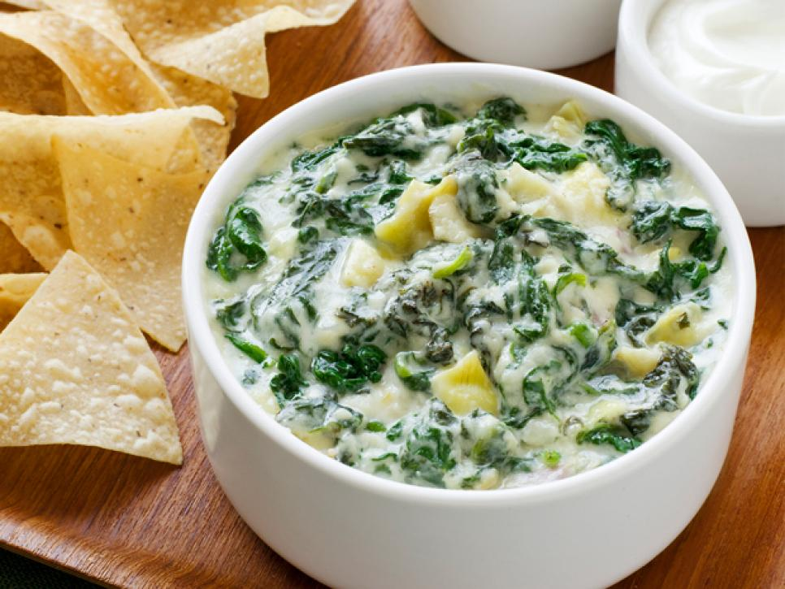
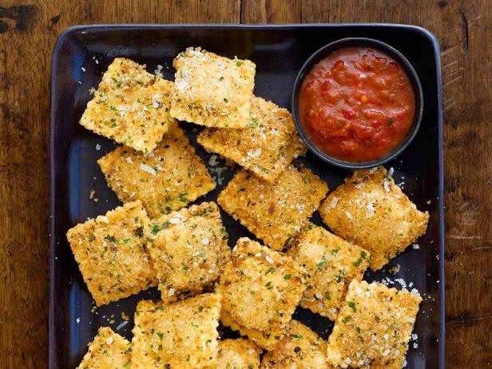
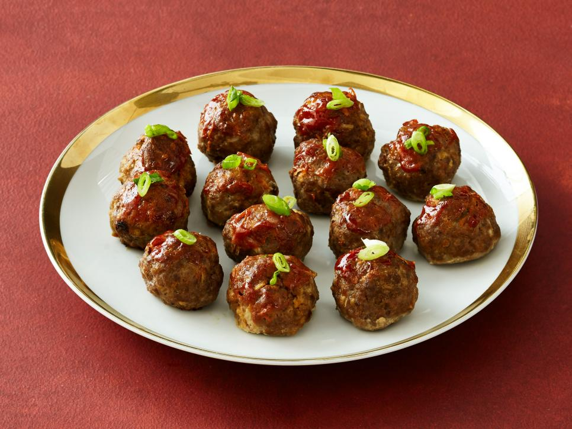

Appetizers
Learn how to make easy and elegant recipes!
Onion-Herb Focaccia
There's nothing in the world like the smell of onions caramelizing in butter. It's even better when you combine both aromas on warm bread.
- prep time: 20 min
- cook time: 25 min
- Serves: 4
-

Spinach and Artichoke Dip
Serves: 4 - 6
This spinach-artichoke dip is homemade comfort at its best. Salsa ain't got nothin on this fantastic creamy dip. Don't fuss over hummus when you can whip up this tasty appetizer in just 15 minutes!
View Recipe -

Fried Mushroom Ravioli
Serves: 4 - 6
Crispy fried ravioli is a sure crowd-pleaser for any get-together. These vegetarian ravioli are stuffed with delicious ravioli and will have even the most die-hard meat eater come back for seconds (and thirds!)
View Recipe -

Cocktail Meatballs
Serves: 6 - 8
Meatballs look like something special with a simple garnish. These meatballs are easy to make, have simple ingredients, and are sure to be crowd-pleaser at your next party. Don't miss out!
View Recipe - VIEW MORE RECIPES...